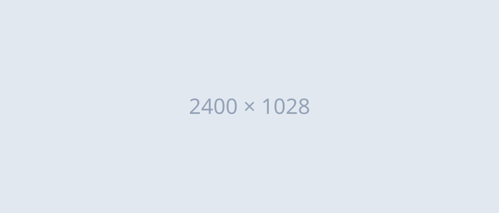
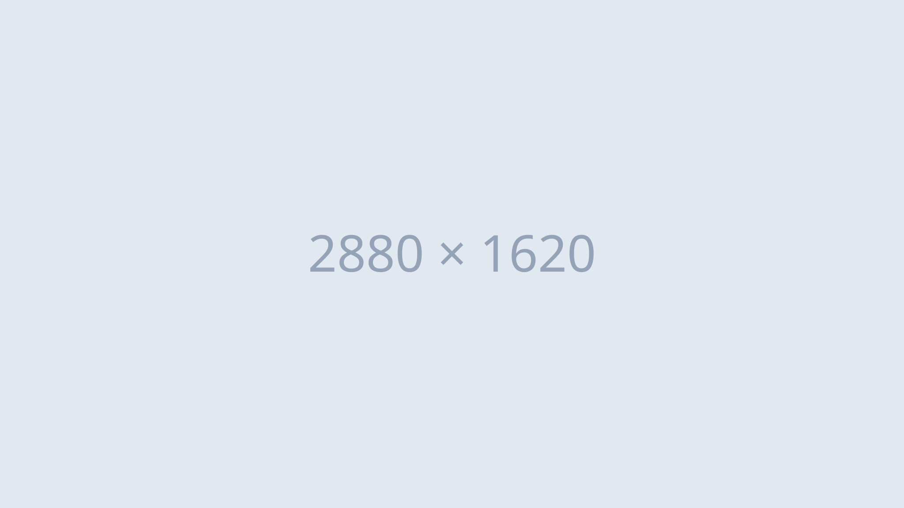

Brand studio — Copenhagen, since 2016
Booking from March 2027
Brands with a point of view.

We name companies, draw their identities and write the rules that keep them recognisable — from Copenhagen, for clients everywhere.
Identities
we've drawn.
- Identities
- 140+
- Countries
- 22
- Drawing Since
- 2016
Selected work
-

Fieldnote
Notebooks that look like the outdoors they're written in.
-

Kestrel Field
One icon language for 140 trail signs.
-
Lumen Type
A foundry that wears its own letters.
-
Slate & Ember
Fire, stone and a menu you keep.
-
Orchard Lane
Quiet goods for slow homes.
-
Glasshouse
A café brand grown under glass.

Anatomy of an identity.
-
01Markp. 04
A leaf that still reads at 16 pixels.
SizesMin. 16 px
- 64 px
- 32 px
- 16 px
Never smaller on screen; 5 mm in print.
-
02Colourp. 12
Fern leads; Signal only marks what's new.
- Fern#2F7A5B
- Moss#A7C4A0
- Paper#F1ECE0
- Graphite#262A27
- Signal#F2C94C
- 60% Fern
- 20% Moss
- 10% Paper
- 5% Graphite
- 5% Signal
-
03Typep. 18
Funnel Display for names, Inter for everything else.
ABCDEFGHIJKLM
NOPQRSTUVWXYZ
abcdefghijklmnopqrstuvwxyz 0123456789 - FieldnoteLight 300
- FieldnoteSemibold 600
- FieldnoteExtra Bold 800
Inter for textRegular 400 · Semibold 600
-
04In the Worldp. 26
From notebook covers to the shop on Jægersborggade.
Read the Case Study

Twelve weeks, four drafts.
One mark, followed from the first pencil line to the file you keep.
-
Weeks 1–2
Listen
Interviews, audits, one shared brief.
-
Weeks 3–5
Sketch
Two routes on the wall, one chosen.
-
Weeks 6–10
Build
Mark, colour, type, voice — tested in use.
-
Weeks 11–12
Hand Over
The brand book, the files, a launch kit.
Client voices
“They gave a notebook company a face people point at in shops.”
 Ida Berg
Founder, Fieldnote
Ida Berg
Founder, Fieldnote
“The name came first, then everything clicked — menus, signs, even the plates.”
Lukas Brandt
Co-owner, Slate & Ember
“Our foundry finally looks like the type we sell.”
Emma Lindqvist
Director, Lumen Type